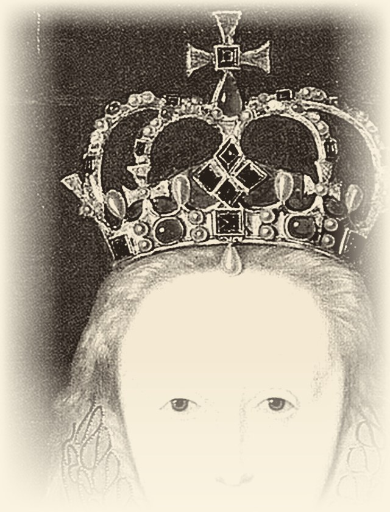

1Elizabeth was born in 1533. Her parents were King Henry VIII and Anne Boleyn. Her father was not happy because he wanted a son. When Elizabeth was two years old, her mother was killed. The young girl went to live at Hatfield Palace, where she got a very good education. By the age of thirteen, she spoke several languages and was a good writer.
2She became queen in 1558. Many men from different countries wanted to marry her, but she said no to all of them. She never married because she wanted to keep all the power herself. During her reign, she had a big conflict with Spain. Spain was a big, rich, and Catholic country, but England was smaller and Protestant. In the 1580s, the two countries fought at sea. English sailors were fast and clever, so Spain never won.
3The Queen had time for other things and loved the theatre very much. Her favourite writer was William Shakespeare, and his actors often performed plays at her palace. As a young woman, Elizabeth was ill with smallpox, and the illness left marks on her face. To hide them, she covered her face with thick white make-up and wore a big orange wig.
4Elizabeth died on 24 March 1603. She was queen for 44 years. Nobody knows exactly why she died, but the white make-up was a poison, and it perhaps killed her slowly. Today, she is buried in Westminster Abbey.